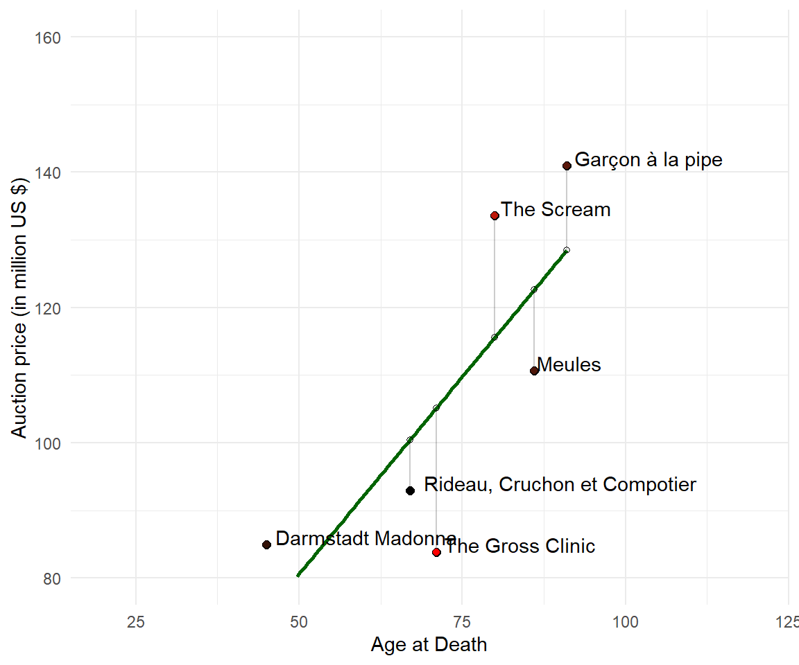

Chapter 9 Relationships
The most interesting research questions in social science are about relationships.
What is the relationship between beauty and employment chances? What is the connection between money and happiness? How does remote work change ones productivity? Is social support related to longevity of marriages?
A relationship is the way in which two or more variables are connected. We pose that everything that can be measured. Relationships between two (continuous) variables are quantified via covariance or correlation and may be illustrated in a scatter plot.
Did you know that the number of Stork pairs and babies born in Europe is related?
_(1)_Koski_Tl._9.7.2015.jpg)
Figure 9.1: The first known pair in Finland (2015), representing a northward expansion compared to the species' historical breeding range.
9.1 The Data
library(readxl)
library(tidyverse)
library(countrycode)
# Stork Basis Data
storks <- readxl::read_xlsx("./data/Storks/Storks.xlsx", sheet = 2)
# Wide to Long
storks <- storks %>%
pivot_longer(
cols = 2:3,
names_to = "Year",
values_to = "Storks"
)
storks$code <- countrycode(storks$Country,
origin = 'country.name',
destination = 'iso3c')
storks$Year <- as.numeric(storks$Year)
# Area
country_area <- read.csv("https://raw.githubusercontent.com/bnokoro/Data-Science/master/countries%20of%20the%20world.csv")
country_area <- country_area %>%
select(Country, Area..sq..mi..) %>%
rename(Area = Area..sq..mi..) %>%
mutate(code = countrycode(country_area$Country,
origin = 'country.name',
destination = 'iso3c')) %>%
select(code, Area)
storks <-left_join(storks, country_area, by = "code")
# Population
# https://www.kaggle.com/datasets/themlphdstudent/countries-population-from-1955-to-2020?resource=download
#https://www.kaggle.com/code/themlphdstudent/country-wise-population-from-1955-to-2020
country_pop <- read.csv("./data/Storks/Countries Population from 1995 to 2020.csv")
country_pop$code <- countrycode(country_pop$Country,
origin = 'country.name',
destination = 'iso3c')
country_pop <- country_pop %>% filter(Year %in% c(1995, 2005)) %>%
select(code, Year, Population, Fertility.Rate,Urban.Population)
storks <-left_join(storks, country_pop, by = c("code", "Year"))
glimpse(storks)
#> Rows: 56
#> Columns: 8
#> $ Country <chr> "Albania", "Albania", "Austria", "Austria", "Belgium"…
#> $ Year <dbl> 1995, 2005, 1995, 2005, 1995, 2005, 1995, 2005, 1995,…
#> $ Storks <dbl> 2, 3, 350, 395, 35, 50, 11807, 21362, NA, 40, 4227, 4…
#> $ code <chr> "ALB", "ALB", "AUT", "AUT", "BEL", "BEL", "BLR", "BLR…
#> $ Area <int> 28748, 28748, 83870, 83870, 30528, 30528, 207600, 207…
#> $ Population <int> 3112936, 3086810, 7990121, 8253650, 10186305, 1054688…
#> $ Fertility.Rate <dbl> 2.79, 1.95, 1.48, 1.38, 1.61, 1.68, 1.68, 1.26, 1.70,…
#> $ Urban.Population <int> 1208874, 1438933, 4921587, 4854250, 9857972, 10272952…
options(scipen=10000)
storks %>%
filter(Year == 2005) %>%
ggplot(aes(x = Storks, y = Population)) +
geom_point() +
geom_smooth(method = "lm", se=FALSE) +
theme_minimal()
library("maps")
# Retrieve the map data for Participant Countries
stork_map <- map_data("world", region = storks$code)
ggplot(stork_map) +
geom_map(aes(map_id = region),
map = stork_map) +
geom_polygon(data = stork_map, aes(x = long, y = lat, group = group),
colour = 'black', fill = NA) +
expand_limits(x = world_map$long, y = world_map$lat) +
scale_fill_brewer(name = "Counts", palette = "Reds") +
theme_void() +
coord_fixed()
library(geosphere)
centroids <- stork_map %>%
group_by(region) %>%
group_modify(~ data.frame(centroid(cbind(.x$long, .x$lat))))
ggplot(stork_map) +
geom_map(aes(map_id = region),
map = stork_map) +
geom_polygon(data = stork_map, aes(x = long, y = lat, group = group),
fill = NA) +
expand_limits(x = world_map$long, y = world_map$lat) +
scale_fill_brewer(name = "Counts", palette = "Reds") +
theme_void() +
coord_fixed() +
geom_point(data = centroids, aes(lon, lat), col = "red")
9.2 Variance
This is Sparta data.
x=c(4,13,19,25,29)
y=c(10,12,28,32,38)Definition
The variance is defined as the average quadratic deviation from the mean.
\[var(x) = \frac{1}{n-1} \sum (x_i - \overline{x} )^2\]
The variance of x is 98 and can be calculated via var() in R.
# Built-in command
var(x)
#> [1] 98The standard deviation is derived from variance and tells, on average, how far each value lies from the mean. It’s the square root of variance. Variance and standard deivation measure the variability of a variable.
Truly Dedicated
When you have collected data from every member of the population that you’re interested in, you can get an exact value for population variance. When you collect data from a sample, the sample variance is used to make estimates or inferences about the population variance.
The one-dimensional variable x is visualized as points on a line. The mean of x is 18 (red bold line). The standard variation of x is 9.8994949 and surrounds the mean.

Truly Dedicated
In statistics, the empirical rule states that 99.7% of data occurs within three standard deviations of the mean within a normal distribution. To this end, 68% of the observed data will occur within the first standard deviation, 95% will take place in the second deviation, and 97.5% within the third standard deviation.
The scatterplot is a two-dimensional instrument. It shows the original information from x and y and their respective means as bold red lines.

9.3 Covariance
Covariance is a measure of the joint variability of two variables. The main idea of covariance is to classify three types of relationships: positive, negative or no relationship. For each data point, we multiply the differences with the respective mean. When both values are smaller or greater than the mean, the result will be positive.
Definition
The covariance between two variables is the product of the deviations of x and y from their respective means.
\[cov(x,y) = \frac{1}{n-1} \sum\limits (x_i - \bar{x})(y_i - \bar{y})\]
# Built-in command
cov(x,y)
#> [1] 117.5Now we turn to the visualization of the covariance. For each data point, we multiply the differences with the respective mean. This results in several rectangular areas starting at the intersection of means as a new origin. The covariance sums up all these areas.

Your Turn
Validate the covariance result from cov(x,y) by mental calculation.
9.4 Correlation
Covariance quantifies a relationship and is similar to correlation. Covariance is expressed in units that vary with the data. Because the data are not standardized, you cannot use the covariance statistic to assess the strength of a linear relationship (a covariance of 117.5 can be very low for one relationship and 0.23 very high for another relationship).
To assess the strength of a relationship between two variables a correlation coefficient is commonly used. It brings variation to a standardized scale of 1 to +1.
Definition
The correlation coefficient is a statistical measure of the strength and direction of the relationship between two variables.
\[r(x,y) = \frac{\sum\limits (x_i - \bar{x})(y_i - \bar{y})}{\sqrt{\sum\limits (x_i - \bar{x})^2 \sum\limits (y_i - \bar{y})^2}}\]
Does the numerator and denominator remind you of something? The formula is made of the components variance and covariance. Thus, the correlation coefficient formula is often expressed in short as:
\[r(x,y,) = \frac{Cov(x,y)}{\sqrt{Var(x) Var(y)}}\]
cor() is a basic function to calculate the correlation coefficient.
# Basic function
cor(x,y)
#> [1] 0.9564548cor.test() is a more sophisticated version including a hypothesis test.
# More advanced function
cor.test(x,y)
#>
#> Pearson's product-moment correlation
#>
#> data: x and y
#> t = 5.6757, df = 3, p-value = 0.01084
#> alternative hypothesis: true correlation is not equal to 0
#> 95 percent confidence interval:
#> 0.4751038 0.9972195
#> sample estimates:
#> cor
#> 0.9564548The correlation test is based on a t-value (t = 5.6757104) and returns a p-value (0.0108364) for statistical significance.
There is an awesome connection from correlation coefficient to the simple regression coefficient.
Amazing Fact
The correlation coefficient and the simple regression coefficient coincide when the two variables are on the same scale. The most common way of achieving this is through standardization.
\[\beta = cor(Y,X) \cdot \frac{SD(Y)}{SD(X)} \]
Here is the replication:
# The data
df = data.frame(x=c(4,13,19,25,29), y=c(10,12,28,32,38))
# The correlation coefficient
cor_coef <- cor(df$x, df$y, method="pearson")
cor_coef
#> [1] 0.9564548The correlation coefficient is 5.6757104.
# The regression coefficient
linear_model <- lm(y~x, data=df)
reg_coef <- linear_model$coefficients[2]
reg_coef
#> x
#> 1.19898The regression coefficient of x is 1.1989796. Here is the connection:
# The connection
cor_coef * sd(y) / sd(x)
#> [1] 1.19898Alternatively standardize the data first, then calculate correlation and regression:
# The connection
df_scaled <- as.data.frame(scale(df, center = TRUE, scale = TRUE))
# The correlation on standardized variables
cor(df_scaled$x, df_scaled$y, method="pearson")
#> [1] 0.9564548# The regression on standardized variables
lm(y~x, data=df_scaled)$coefficients[2]
#> x
#> 0.9564548